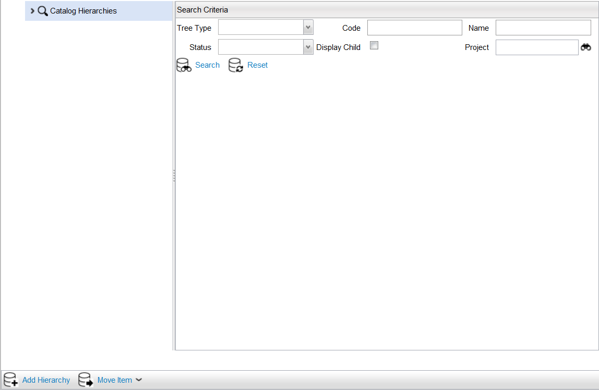

The Catalog Hierarchy is a directory structure for organizing products and offers, and is the framework by which your products nest into expandable groups for selection when integrated with a metadata application. The directory structure may represent the business hierarchy, such as the separation of Business division and Residential division, and perhaps beneath the division, services categorization such as Television, Internet, Wireless, etc. The Catalog Hierarchy defines the structure for browsing the Catalog and allows you to associate a product or an offer to multiple nodes within the hierarchy (for example, an offer can be made available for both Business and Residential divisions).
Products in the hierarchy can be associated with multiple nodes in the hierarchy. Use the Catalog Hierarchy to define and configure the structure for browsing your Catalog. The hierarchy is used when the Catalog data is merged into a metadata application and the Catalog is browsed during the states of order creation.
You can search for existing hierarchies using the Search icon.
|  |
The Catalog Hierarchy page contains the following fields:
| Fields | Description |
|---|---|
| Tree Type | The hierarchy of tree nodes can be based on a Classification hierarchy or Availability of rules. See also Add Catalog Hierarchies. |
| Code | This unique code to identify the Catalog hierarchy's instance name. See also Catalog Queries. |
| Name | The unique name of the Catalog Hierarchy. The visual label used for this Catalog Hierarchy in the application user interface.This label can be translated at runtime (Refer to Velocity Studio's Translation Element for more details). |
| Status | The status is attributed to the development stage of the project. For more information on project stages, see Projects. |
| Display Child | Select this checkbox to display the child nodes for the Catalog hierarchy. |
| Project | The name of the project in which the hierarchy resides. |
On the Catalog Hierarchy page, you can do the following actions:
| Action | Description |
|---|---|
| Search | Expands and returns child nodes of the selected node. |
| Reset | Resets the search criteria. |
| Add Hierarchy | Adds a new hierarchy node to the Catalog Hierarchy node. |
| Change History | If you make a change to the catalog definition, you can view the Change History form that displays the revisions made to the Attribute Type's field values. See also Change History. |
{kind=link}